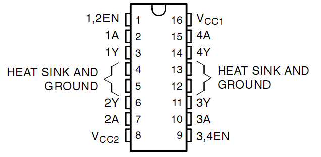
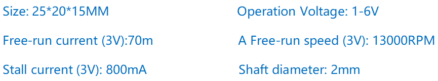
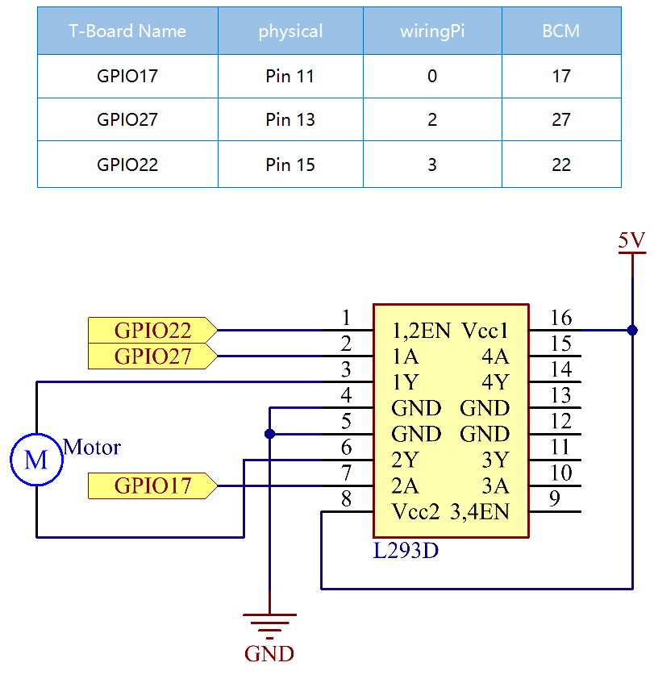

Note
Bonjour, bienvenue dans la communauté SunFounder Raspberry Pi & Arduino & ESP32 Enthusiasts sur Facebook ! Plongez au cœur du Raspberry Pi, Arduino et ESP32 avec d’autres passionnés.
Pourquoi nous rejoindre ?
Support d’experts : Résolvez vos problèmes post-vente et défis techniques grâce à l’aide de notre communauté et de notre équipe.
Apprendre & Partager : Échangez des conseils et des tutoriels pour améliorer vos compétences.
Aperçus exclusifs : Accédez en avant-première aux annonces de nouveaux produits et aux aperçus exclusifs.
Réductions spéciales : Profitez de réductions exclusives sur nos nouveaux produits.
Promotions festives et cadeaux : Participez à des concours et des promotions spéciales pendant les fêtes.
👉 Prêt à explorer et créer avec nous ? Cliquez sur [Ici] et rejoignez-nous dès aujourd’hui !
1.3.1 Moteur
Introduction
Dans cette leçon, nous apprendrons à utiliser le L293D pour piloter un moteur à courant continu (DC) et le faire tourner dans le sens horaire et antihoraire. Comme le moteur DC nécessite un courant plus important, pour des raisons de sécurité, nous utilisons ici le module d’alimentation pour alimenter les moteurs.
Composants

Principe
L293D
Le L293D est un circuit intégré de pilote de moteur à 4 canaux avec haute tension et haut courant. Il est conçu pour se connecter aux niveaux logiques standards DTL, TTL, et pour piloter des charges inductives (comme des relais, moteurs DC, moteurs pas à pas) ainsi que des transistors de commutation de puissance, etc. Les moteurs DC sont des dispositifs qui transforment l’énergie électrique en énergie mécanique. Ils sont largement utilisés pour leur excellente performance de régulation de vitesse.
Voyez l’image des broches ci-dessous. Le L293D dispose de deux broches (Vcc1 et Vcc2) pour l’alimentation. Vcc2 est utilisé pour alimenter le moteur, tandis que Vcc1 alimente la puce. Comme un petit moteur DC est utilisé ici, connectez les deux broches au +5V.
L’image suivante montre la structure interne du L293D. La broche EN est une broche d’activation et ne fonctionne qu’avec un niveau haut. A représente l’entrée et Y la sortie. Vous pouvez voir la relation entre eux en bas à droite. Lorsque la broche EN est à un niveau haut, si A est à un niveau haut, Y envoie un niveau haut ; si A est à un niveau bas, Y envoie un niveau bas. Lorsque la broche EN est à un niveau bas, le L293D ne fonctionne pas.

Moteur DC

Voici un moteur DC 5V. Il tourne lorsque vous appliquez un niveau haut à une borne et un niveau bas à l’autre. Pour plus de commodité, vous pouvez souder des broches à ses bornes.
Module d’alimentation
Dans cette expérience, il faut des courants importants pour entraîner le moteur, surtout lors des démarrages et arrêts, ce qui peut interférer avec le fonctionnement normal du Raspberry Pi. Par conséquent, nous alimentons séparément le moteur via ce module afin qu’il fonctionne de manière sûre et stable.
Vous pouvez simplement le brancher sur la breadboard pour l’alimenter. Il fournit une tension de 3,3V ou 5V, et vous pouvez choisir l’une ou l’autre avec un cavalier inclus.

Schéma de câblage
Branchez le module d’alimentation sur la breadboard et insérez le cavalier sur la broche 5V pour obtenir une sortie de 5V. Connectez la broche 1 du L293D au GPIO22, et réglez-la sur un niveau haut. Connectez la broche 2 au GPIO27, et la broche 7 au GPIO17. Réglez une broche sur un niveau haut et l’autre sur un niveau bas. Ainsi, vous pouvez changer la direction de rotation du moteur.
Procédures expérimentales
Étape 1 : Montez le circuit.

Note
Le module d’alimentation peut être utilisé avec une pile 9V grâce à l’attache de pile 9V fournie dans le kit. Insérez le cavalier du module d’alimentation dans les barres d’alimentation 5V de la breadboard.

Pour les utilisateurs du langage C
Étape 2 : Accédez au dossier du code.
cd ~/davinci-kit-for-raspberry-pi/c/1.3.1/
Étape 3 : Compilez le code.
gcc 1.3.1_Motor.c -lwiringPi
Étape 4 : Exécutez le fichier exécutable ci-dessus.
sudo ./a.out
Lorsque le code s’exécute, le moteur tourne d’abord dans le sens horaire pendant 5 secondes, puis s’arrête pendant 5 secondes. Ensuite, il tourne dans le sens antihoraire pendant 5 secondes, puis s’arrête à nouveau pendant 5 secondes. Cette série d’actions sera exécutée en boucle.
Note
Si cela ne fonctionne pas après exécution ou si un message d’erreur s’affiche : "wiringPi.h: Aucun fichier ou répertoire de ce type », veuillez consulter C code is not working?.
Code
#include <wiringPi.h>
#include <stdio.h>
#define MotorPin1 0
#define MotorPin2 2
#define MotorEnable 3
int main(void){
int i;
if(wiringPiSetup() == -1){ //en cas d'échec de l'initialisation de wiringPi, affichage du message à l'écran
printf("setup wiringPi failed !");
return 1;
}
pinMode(MotorPin1, OUTPUT);
pinMode(MotorPin2, OUTPUT);
pinMode(MotorEnable, OUTPUT);
while(1){
printf("Clockwise\n");
delay(100);
digitalWrite(MotorEnable, HIGH);
digitalWrite(MotorPin1, HIGH);
digitalWrite(MotorPin2, LOW);
for(i=0;i<3;i++){
delay(1000);
}
printf("Stop\n");
delay(100);
digitalWrite(MotorEnable, LOW);
for(i=0;i<3;i++){
delay(1000);
}
printf("Anti-clockwise\n");
delay(100);
digitalWrite(MotorEnable, HIGH);
digitalWrite(MotorPin1, LOW);
digitalWrite(MotorPin2, HIGH);
for(i=0;i<3;i++){
delay(1000);
}
printf("Stop\n");
delay(100);
digitalWrite(MotorEnable, LOW);
for(i=0;i<3;i++){
delay(1000);
}
}
return 0;
}
Explication du code
digitalWrite(MotorEnable, HIGH);
Active le L239D.
digitalWrite(MotorPin1, HIGH);
digitalWrite(MotorPin2, LOW);
Met un niveau haut pour 2A (broche 7) ; puisque 1,2EN (broche 1) est à un niveau haut, 2Y sortira un niveau haut.
Met un niveau bas pour 1A, alors 1Y sortira un niveau bas, et le moteur tournera.
for(i=0;i<3;i++){
delay(1000);
}
Cette boucle permet un délai de 3 * 1000ms.
digitalWrite(MotorEnable, LOW)
Si 1,2EN (broche 1) est à un niveau bas, le L293D ne fonctionne pas. Le moteur s’arrête.
digitalWrite(MotorPin1, LOW)
digitalWrite(MotorPin2, HIGH)
Inverse le sens du courant dans le moteur, puis le moteur tournera dans le sens inverse.
Pour les utilisateurs de Python
Étape 2 : Accédez au dossier du code.
cd ~/davinci-kit-for-raspberry-pi/python
Étape 3 : Exécutez le code.
sudo python3 1.3.1_Motor.py
Lorsque le code s’exécute, le moteur tourne d’abord dans le sens horaire pendant 5s, puis s’arrête pendant 5s. Ensuite, il tourne dans le sens antihoraire pendant 5s, puis s’arrête à nouveau pendant 5s. Cette série d’actions sera exécutée en boucle.
Code
Note
Vous pouvez Modifier/Réinitialiser/Copier/Exécuter/Arrêter le code ci-dessous. Mais avant cela, vous devez vous rendre sur le chemin du code source, par exemple davinci-kit-for-raspberry-pi/python.
#!/usr/bin/env python3
import RPi.GPIO as GPIO
import time
# Configurer les broches
MotorPin1 = 17
MotorPin2 = 27
MotorEnable = 22
def setup():
# Configurer les modes GPIO selon la numérotation BCM
GPIO.setmode(GPIO.BCM)
# Définir les broches en sortie
GPIO.setup(MotorPin1, GPIO.OUT)
GPIO.setup(MotorPin2, GPIO.OUT)
GPIO.setup(MotorEnable, GPIO.OUT, initial=GPIO.LOW)
# Définir une fonction pour faire tourner le moteur
# La direction doit être
# 1(sens horaire), 0(arrêt), -1(sens antihoraire)
def motor(direction):
# Sens horaire
if direction == 1:
# Configurer la direction
GPIO.output(MotorPin1, GPIO.HIGH)
GPIO.output(MotorPin2, GPIO.LOW)
# Activer le moteur
GPIO.output(MotorEnable, GPIO.HIGH)
print ("Clockwise")
# Sens antihoraire
if direction == -1:
# Configurer la direction
GPIO.output(MotorPin1, GPIO.LOW)
GPIO.output(MotorPin2, GPIO.HIGH)
# Activer le moteur
GPIO.output(MotorEnable, GPIO.HIGH)
print ("Counterclockwise")
# Arrêt
if direction == 0:
# Désactiver le moteur
GPIO.output(MotorEnable, GPIO.LOW)
print ("Stop")
def main():
# Définir un dictionnaire pour rendre le script plus lisible
# CW pour sens horaire, CCW pour sens antihoraire, STOP pour arrêt
directions = {'CW': 1, 'CCW': -1, 'STOP': 0}
while True:
# Sens horaire
motor(directions['CW'])
time.sleep(5)
# Arrêt
motor(directions['STOP'])
time.sleep(5)
# Sens antihoraire
motor(directions['CCW'])
time.sleep(5)
# Arrêt
motor(directions['STOP'])
time.sleep(5)
def destroy():
# Arrêter le moteur
GPIO.output(MotorEnable, GPIO.LOW)
# Libérer les ressources
GPIO.cleanup()
# Si ce script est exécuté directement :
if __name__ == '__main__':
setup()
try:
main()
# Lorsque 'Ctrl+C' est pressé, la fonction destroy() est exécutée.
except KeyboardInterrupt:
destroy()
Explication du Code
def motor(direction):
# Sens horaire
if direction == 1:
# Configurer la direction
GPIO.output(MotorPin1, GPIO.HIGH)
GPIO.output(MotorPin2, GPIO.LOW)
# Activer le moteur
GPIO.output(MotorEnable, GPIO.HIGH)
print ("Clockwise")
...
Créez une fonction, motor(), dont la variable est direction. Si la condition direction=1 est remplie, le moteur tourne dans le sens horaire ; lorsque direction=-1, le moteur tourne dans le sens antihoraire ; et sous la condition direction=0, il s’arrête.
def main():
# Définir un dictionnaire pour rendre le script plus lisible
# CW pour sens horaire, CCW pour sens antihoraire, STOP pour arrêt
directions = {'CW': 1, 'CCW': -1, 'STOP': 0}
while True:
# Sens horaire
motor(directions['CW'])
time.sleep(5)
# Arrêt
motor(directions['STOP'])
time.sleep(5)
# Sens antihoraire
motor(directions['CCW'])
time.sleep(5)
# Arrêt
motor(directions['STOP'])
time.sleep(5)
Dans la fonction main(), créez un tableau directions[], dans lequel CW est égal à 1, CCW vaut -1 et 0 représente l’arrêt.
Lorsque le code s’exécute, le moteur tourne d’abord dans le sens horaire pendant 5 secondes, puis s’arrête pendant 5 secondes. Ensuite, il tourne dans le sens antihoraire pendant 5 secondes, puis s’arrête à nouveau pendant 5 secondes. Cette série d’actions se répète.
Vous devriez maintenant voir la lame du moteur tourner.
Image du phénomène